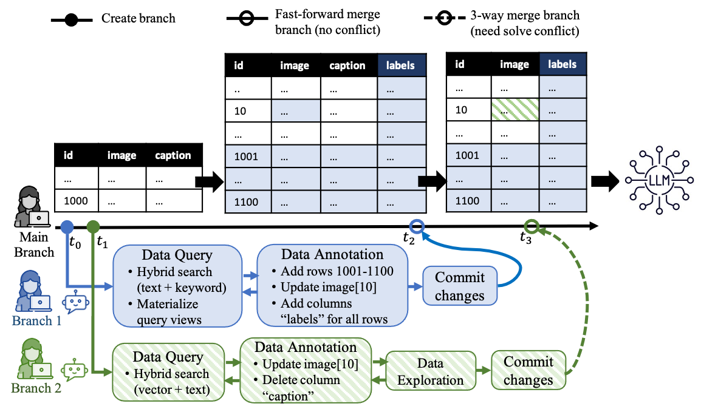

Introduction

At modern training scales, AI datasets are no longer curated by a single user, but collaboratively by multiple data engineers working on parallel data branches. In practice, engineers independently check out dataset branches, perform LLM-assisted data annotation and exploration, and commit their changes. As the main dataset evolves, some branches can be fast-forward merged (e.g., merging Branch 1 at t2), while others require three-way merges with conflict detection (e.g., merging Branch 2 at t3).
However, existing data lake formats (e.g., Parquet, Lance, Iceberg, Deep Lake) do not natively support such collaborative, Git-like data workflows. To address this gap, we introduce MULLER, a novel Multimodal data lake format designed for collaborative AI data workflows, with the following key features:
- Mutimodal data support with than 12 data types of different modalities, including scalars, vectors, text, images, videos, and audio, with 20+ compression formats (e.g., LZ4, JPG, PNG, MP3, MP4, AVI, WAV).
- Data sampling, exploration, and analysis through low-latency random access and fast scan.
- Array-oriented hybrid search engine that jointly queries vector, text, and scalar data.
- Git-like data versioning with support for commit, checkout, diff, conflict detection and resolution, as well as merge. Specifically, to the best of our knowledge, MULLER is the first data lake format to support fine-grained row-level updates and three-way merges across multiple coexisting data branches.
- Seamless integration with LLM/MLLM data training and processing pipelines.
Here is a video demo of MULLER to demonstrate the basic functions.